건설기계설비기사 (2005-05-29 기출문제)
1과목: 재료역학
1. 그림과 같이 보 요소에 평면응력이 작용할 때 최대 전단응력은 몇 MPa 인가?(단, σx=40 MPa, σy=-15 MPa, τxy=10 MPa 이다.)
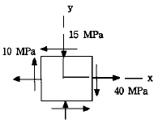
- 16.3
- 23.3
- 29.3
- 35.3
(정답률: 알수없음)

2. 좌굴(座堀, buckling)현상은 다음 중 어느 경우에 일어나기 쉬운가?
- 구조물에 복합하중이 작용할 때
- 단주에 축방향의 인장하중을 받을 때
- 장주에 축방향의 압축하중을 받을 때
- 트러스의 구조물에 전단하중이 작용할 때
(정답률: 알수없음)
3. 길이가 ℓ인 외팔보 AB가 보의 일부분 b위에 ω의 균일분포하중이 작용되고 있을때 이보의 자유단 A의 처짐량은 얼마인가?
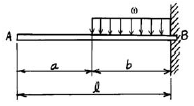
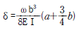
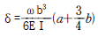
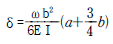
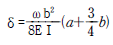
(정답률: 알수없음)
4. 그림과 같은 단순보의 중앙 C에 집중하중 P, C와 B사이에 균일 분포하중 ω가 작용할 때 왼쪽 A지점의 반력 RA 은?
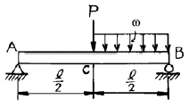
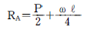
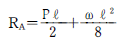
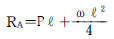
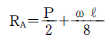
(정답률: 알수없음)
5. 보의 자중을 무시할때 그림과 같이 자유단 C에 집중하중 P가 작용할 때 B점에서 처짐 곡선의 기울기각 θ을 탄성 계수 E, 단면 2차모멘트 I로 나타내면?
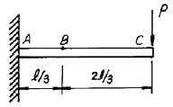
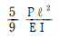
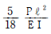
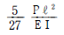
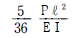
(정답률: 알수없음)
6. 길이 L인 봉 AB가 그 양단에 고정된 두개의 연직강선에 의하여 그림과 같이 수평으로 매달려 있다. 이강선들은 단면적은 같지만 A단의 강선은 탄성계수 E1, 길이 ℓ1 이고, B단의 강선은 탄성계수 E2, 길이 ℓ2 이다. 봉 AB의 자중은 무시하고, 봉이 수평을 유지하기 위한 연직하중 P의 작용점 까지의 거리 x는?
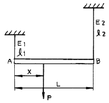
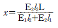
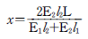
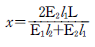
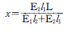
(정답률: 알수없음)
7. 그림과 같은 보에서 보의 자중은 무시하고, 왼쪽 A지점으로부터 거리 ℓ1인 위치에 모멘트 M이 작용할 때, 지점 A의 반력의 절대값은?
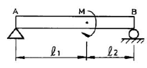
- 0(zero)
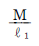
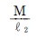
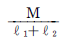
(정답률: 알수없음)
8. 지름 80 mm의 원형단면의 중립축에 대한 관성모멘트에 가장 가까운 것은?
- 0.5x106 mm4
- 1x106 mm4
- 2x106 mm4
- 4x106 mm4
(정답률: 알수없음)
9. 그림과 같은 외팔보에 있어서 고정단에서 20 cm되는 점의 굽힘모멘트 M은 몇 kN·m인가?
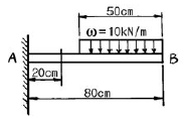
- 1.6
- 1.75
- 2.2
- 2.75
(정답률: 알수없음)
10. 직경 10 cm의 강재축이 750 rpm로 회전한다. 안전하게 전달시킬 수 있는 최대 동력은 얼마인가?(단, 허용전단응력 τa= 35 MPa이다.)
- 500 kW
- 539 kW
- 579 kW
- 659 kW
(정답률: 알수없음)
11. 그림과 같은 단순지지보의 B점에서 반력이 작용하지 않게 되는 하중 P는 몇 kN 인가?
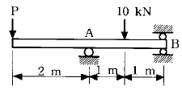
- 2
- 5
- 8
- 10
(정답률: 알수없음)
12. 그림과 같은 조인트(joint)가 전하중 P=1000 kN을 받도록 설계하고자 한다. 볼트의 허용 전단응력이 100 MPa일 때 볼트의 최소지름에 가장 가까운 값은?
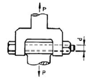
- 8 ㎝
- 10 ㎝
- 12 ㎝
- 14 ㎝
(정답률: 알수없음)
13. 그림과 같은 보에서 반력 R1, R2의 크기는 각각 몇 kN 인가?
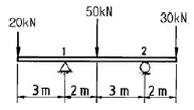
- R1 = 50, R2 = 50
- R1 = 20, R2 = 80
- R1 = 70, R2 = 30
- R1 = 65, R2 = 35
(정답률: 알수없음)
14. 주평면(Principal plane)에 대한 다음 설명중 옳은 것은?
- 주평면에는 전단응력과 수직응력의 합이 작용한다.
- 주평면에는 전단응력만이 작용하고 수직응력은 작용하지 않는다.
- 주평면에는 전단응력은 작용하지 않고 최대 및 최소의 수직응력만이 작용한다.
- 주평면에는 최대의 수직응력만이 작용한다.
(정답률: 알수없음)
15. 한변의 길이가 8 cm인 정사각형 단면의 봉이 있다. 온도를 20℃상승시켜도 길이가 늘어나지 않도록 하는데 280 kN의 힘이 필요하다. 이 봉의 선팽창계수(/℃)는? (단, 봉의 탄성계수 E= 210 GPa 이다.)
- 9.63x10-6
- 10.42x10-6
- 11.2x10-6
- 11.4x10-6
(정답률: 알수없음)
16. 지름 d= 3 cm의 재료가 P= 25 kN의 전단하중을 받아서 0.00075의 전단 변형률을 발생시켰다. 이 때 재료의 전단탄성계수는 몇 GPa인가?
- 87.7
- 97.7
- 47.2
- 57.2
(정답률: 알수없음)
17. 단면적이 A 탄성계수가 E 길이가 L인 막대에 길이방향의 인장하중을 가하여 그 길이가 δ 만큼 늘어났다면, 이 때 저장된 탄성변형에너지는?
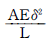
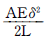
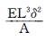
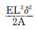
(정답률: 알수없음)
18. 축방향 단면적 A인 임의재료를 인장하여 균일한 인장응력이 작용하고 있다. 인장방향 변형률이 ε , 포아송의 비를 μ 라 하면 단면적의 변화량은 얼마인가?
- μA
- 2μεA
- 3μεA
- 4μεA
(정답률: 알수없음)
19. 코일스프링에서 가하는 힘 P, 코일반지름 R, 소선의 지름d, 전단탄성계수 G라면 코일스프링에 한번 감길때마다 소선의 비틀림각 ø를 나타내는 식은?
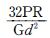
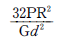
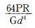
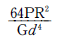
(정답률: 알수없음)
20. 길이 2 m, 지름 12 ㎝의 원형단면 고정보에 등분포 하중ω= 15 kN/m가 작용할 때 최대처짐량 δmax는 얼마인가?(단, 탄성계수 E = 210 GPa)
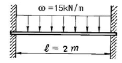
- 0.2 mm
- 0.4 mm
- 0.3 mm
- 0.5 mm
(정답률: 알수없음)
2과목: 기계열역학
21. 여름철 외기의 온도가 30℃일때 김치 냉장고의 내부를 5℃로 유지하기 위해 3kW의 열을 제거해야 한다. 필요한 최소 동력은 얼마인가?
- 0.27 kW
- 0.37 kW
- 0.54 kW
- 2.7 kW
(정답률: 알수없음)
22. 표준 대기압은 대략 몇 kPa 인가?
- 1.01 kPa
- 10.1 kPa
- 101 kPa
- 1013 kPa
(정답률: 알수없음)
23. -3℃에서 열을 흡수하여 27℃에 방열하는 냉동기의 최대성능계수는?
- 9.0
- 10.0
- 11.25
- 15.25
(정답률: 알수없음)
24. 냉동기에서 압축기 입구, 응축기 입구, 증발기 입구의 엔탈피가 각각 387.2 kJ/kg, 435.1 kJ/kg, 241.8 kJ/kg 일 경우 성능계수는?
- 3.0
- 4.0
- 5.0
- 6.0
(정답률: 알수없음)
25. 그림에서 t1 = 38℃, t2 = 150℃, t3 = 260℃이다. 이 사이클의 열효율은? (단, Cv = 0.172 ㎉/㎏㎉, Cp = 0.241 ㎉/㎏㎉ 이다.)
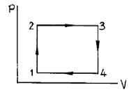
- 4.0 %
- 4.2 %
- 4.4 %
- 4.8 %
(정답률: 알수없음)
26. 실린더내의 유체가 68 kJ/㎏의 일을 받고 주위에 36 kJ/㎏의 열을 방출하였다. 내부에너지의 변화는?
- 32 kJ/㎏ 증가
- 32 kJ/㎏ 감소
- 104 kJ/㎏ 증가
- 104 kJ/㎏ 감소
(정답률: 알수없음)
27. 직경 20 cm, 길이 5 m인 원통 외부에 5 cm 두께의 석면이 씌워져 있다. 석면 내면, 외면 온도가 각각 100℃, 20℃ 이면 손실되는 열량은 몇 kcal/h인가? (단, 석면의 열전도율은 0.1 kcal/mh℃ 로 가정한다.)
- 620
- 720
- 820
- 920
(정답률: 알수없음)
28. 6 냉동톤 냉동기의 성적계수가 3 이다. 이때 필요한 동력은 몇 kW인가? (단, 1 냉동톤은 3.85 kW이다.)
- 4.4
- 5.7
- 6.7
- 7.7
(정답률: 알수없음)
29. 계가 온도 300 K인 주위로부터 단열되어 있고 주위에 대하여 1200 kJ의 일을 할 때 옳지 않은 것은?
- 계의 내부에너지는 1200 kJ 감소한다.
- 계의 엔트로피는 감소하지 않는다.
- 주위의 엔트로피는 4 kJ/K 증가한다.
- 계와 주위를 합한 총엔트로피는 감소하지 않는다.
(정답률: 알수없음)
30. 카르노사이클에 관한 일반적인 설명으로서 가장 옳지 않는 것은?
- 2 개의 가역단열과정과 2 개의 가역등온과정으로 구성된다.
- 사이클에서 총 엔트로피의 변화는 없다.
- 열전달은 등온과정에서만 발생한다.
- 일의 전달은 단열과정에서만 발생한다.
(정답률: 알수없음)
31. 이상기체의 등온 과정에서 압력이 증가하면 엔탈피는?
- 증가 또는 감소
- 증가
- 불변
- 감소
(정답률: 알수없음)
32. 공기 10 kg이 정적 과정으로 20℃에서 250℃까지 온도가 변하였다. 이 경우 엔트로피의 변화는 얼마인가? (단, 공기의 Cv = 0.717 kJ/kgK 이다.)
- 약 2.39 kJ/K
- 약 3.07 kJ/K
- 약 4.15 kJ/K
- 약 5.81 kJ/K
(정답률: 알수없음)
33. 공기가 20 m/s의 속도로 풍차 속으로 유입되고, 6 m/s의 속도로 유출된다. 공기 1 kg 당 풍차가 한 일은?
- 182 J/kg
- 224 J/kg
- 241 J/kg
- 340 J/kg
(정답률: 알수없음)
34. 공기 표준 Brayton 사이클로 작동하는 이상적인 가스 터빈이 있다. 이 터빈의 압축기로 0.1 MPa, 300 K의 공기가 들어가서 0.5 MPa로 압축된다. 이 과정에서 175 kJ/kg의 일이 소요된다. 열교환기를 통해 627 kJ/kg의 열이 들어가 공기를 1100 K로 가열한다. 이 공기가 터빈을 통과하면서 406 kJ/kg의 일을 얻는다. 이 시스템의 열효율은?
- 0.28
- 0.37
- 0.50
- 0.65
(정답률: 알수없음)
35. 다음 그림과 같이 선형 스프링으로 지지되는 피스톤-실린 더 장치 내부에 있는 기체를 가열하여 기체의 체적이 V1에서 V2로 증가하였고, 압력은 P1에서 P2로 변화하였다. 이때 기체가 피스톤에 행한 일은 어느 식으로 계산해야 하는 가?
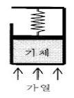
- P2V2-P1V1
- (P2V2-P1V1)/0.4
- (P2+P1)(V2-V1)/2
- P1V1 ln(V2/V1)
(정답률: 알수없음)
36. 비열에 관한 설명으로 옳지 않는 것은?
- 공기의 비열비는 온도가 높을수록 증가한다.
- 단원자 기체의 비열비는 1.67로 일정하다.
- 공기의 정압비열은 온도에 따라서 다르다.
- 액체의 비열비는 1에 가깝다.
(정답률: 알수없음)
37. 증기 터빈 발전소가 이론적으로 최대 45%의 효율을 얻고자 할때, 25℃의 강물을 응축기에서 사용할 때, 보일러의 온도는 몇 도 이상이어야 하는가?
- 227.6℃
- 250.6℃
- 258.4℃
- 268.7℃
(정답률: 알수없음)
38. 어느 이상기체 1 ㎏을 일정 체적 하에 20℃로부터 100℃로 가열하는데 836 kJ의 열량이 소요되었다. 이 가스의 분자량이 2라고 한다면 정압비열은 얼마인가?
- 약 2.09 kJ/㎏℃
- 약 6.27 kJ/㎏℃
- 약 10.5 kJ/㎏℃
- 약 14.6 kJ/㎏℃
(정답률: 알수없음)
39. 정상상태 정상유동 과정의 팽창밸브가 있다. 입구에 액체가 유입되며, 이 과정을 스로틀로 간주할 수 있다. 입구 상태를 1, 출구 상태를 2로 각각 나타낼 때, 다음 중 어느 관계식이 가장 정확한가?
- u1 = u2 (내부에너지)
- h1 = h2 (엔탈피)
- s1 = s2 (엔트로피)
- v1 = v2 (비체적)
(정답률: 알수없음)
40. 보일러 입구의 압력이 9800 kN/m2이고, 복수기의 압력이 4900 N/m2일때 펌프일은? (단, 물의 비체적은 0.001 m3/㎏ 이다.)
- -9.795 kJ/㎏
- -15.173 kJ/㎏
- -87.25 kJ/㎏
- -180.52 kJ/㎏
(정답률: 알수없음)
3과목: 기계유체역학
41. 항구의 모형을 400:1로 축소 제작하려고 한다. 조수간만의 주기가 12시간이면 모형 항구의 조수간만 주기는 몇 시간이 되어야 하는가?
- 0.⑤
- 0.1
- 0.4
- 0.6
(정답률: 알수없음)
42. 어떤 개방된 탱크에 비중이 1.5인 액체 400 mm 위에 물 200 mm가 있다. 이때 탱크 밑면에 작용하는 압력은 몇 Pa인가?
- 0.6
- 7.84
- 6000
- 7840
(정답률: 알수없음)
43. 0.7 m3 의 물이 16.7 MPa의 압력을 받으면 체적은 얼마로 변하겠는가? (단, 물의 체적탄성계수 E = 1960 MPa이다.)
- 0.694 m3
- 0.569 m3
- 0.649 m3
- 0.764 m3
(정답률: 알수없음)
44. 2차원 유동장에서 속도벡터는
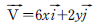
일 때 점(5, 3)을 지나는 유선의 기울기는? (단,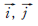
는 x, y 방향의 단위벡터이다.)- 1/3
- 1/5
- 1/9
- 1/12
(정답률: 알수없음)
45. 무게 10kN의 로켓트가 10 kg/s의 가스를 980 m/s 의 속도로 분출할 때 추력은 몇 kN 인가?
- 100
- 10
- 98
- 9.8
(정답률: 알수없음)
46. 길이 150 m인 배를 길이 10 m인 모형으로 조파저항에 관한 실험을 하고자 한다. 실형의 배가 70 km/hr로 움직인다면, 실형과 모형 사이의 역학적 상사를 만족하려면 모형의 속도는 몇 km/hr로 하여야 하는가?
- 10
- 56
- 18
- 271
(정답률: 알수없음)
47. 직경 2.5 ㎝의 수평 원관(circular pipe)을 흐르는 물의 유동이 길이 5 m 당 4 kPa의 압력손실을 겪는다. 관의 벽면 전단응력(wall shear stress)은?
- 2 Pa
- 3 Pa
- 4 Pa
- 5 Pa
(정답률: 알수없음)
48. 액체의 자유 표면에서부터 2.5 m 깊이의 게이지 압력이 19.6 kPa 일 때 이 액체의 비중은?
- 0.8
- 1
- 8.3
- 4.93
(정답률: 알수없음)
49. 그림과 같이 노즐이 달린 수평관에서 압력계 읽음이 0.49 MPa이었다. 이 관의 안지름이 6cm이고 관의 끝에 달린 노즐의 지름이 2 cm이라면 노즐 출구에서 물의 분출속도는 몇 m/s 인가?(단, 노즐에서의 손실은 무시하고, 관 마찰계수는 0.025로 잡는다.)
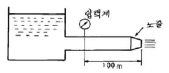
- 16.8
- 20.4
- 25.5
- 28.4
(정답률: 알수없음)
50. 수면의 높이 40 m 인 저수조에서 수면의 높이가 15 m 인 저수조로 직경 45 ㎝, 길이 600 m의 주철관을 통해 물이 흐르고 있다. 유량은 0.25 m3/s이며, 관로 중의 터빈에서 29.4 kW의 이론적인 동력을 얻는다면 관로의 손실수두는 몇 m 인가?
- 11
- 12
- 13
- 14
(정답률: 알수없음)
51. 아주 긴 원관에서 유체가 층류(laminar flow)로 흐를 때 전단응력은 어떻게 변화하는가?
- 전단응력은 일정하다.
- 관벽에서 0이고, 중심까지 포물선 형태로 증가한다.
- 관 중심에서 0이고, 관벽까지 선형적으로 증가한다.
- 관벽에서 0이고, 중심까지 선형적으로 증가한다.
(정답률: 알수없음)
52. 직각 좌표계(x,y,z) 상에서 다음과 같은 속도성분을 갖는 3차원 유동장이 있다. 축 방향의 유속성분이 각각 다음과 같을 때 와도(vorticity)의 x성분을 구하면? (여기서 u,v,w는 각각 x,y,z방향의 속도성분을 나타낸다.)
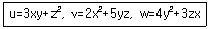
- 13y
- 3y
- -3y
- -13y
(정답률: 알수없음)
53. 길이가 L이고, 지름 D인 수평원관 속에 유체가 흐를 때 관 입구와 출구의 압력차가 ΔP 라면 관벽에서의 전단응력은 얼마인가?
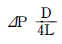
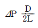
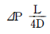
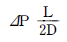
(정답률: 알수없음)
54. 빙산(氷山)은 그 체적의 몇분의 몇이 노출되어 있는가 ? (단, 얼음의 밀도는 920 kg/m3, 해수(海水)의 밀도는 1030 kg/m3 이다.)
- 약 1/5
- 약 2/5
- 약 1/10
- 약 3/10
(정답률: 알수없음)
55. 평판을 지나는 경계층 유동에서 속도분포를 경계층 내에서는
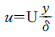
, 경계층 밖에서는 u=U 로 가정할 때, 운동량 두께(momentum thickness)는 경계층 두께 δ의 몇 배인가? (단, U =자유흐름 속도, y =평판으로 부터의 수직거리)- 1/6
- 1/3
- 1/2
- 7/6
(정답률: 알수없음)
56. 그림과 같이 유리관의 A, B 부분의 지름은 각각 30 cm, 10cm 이다. 이 관에 물을 흐르게 하였더니 A에 세운 관에는 물이 60 cm, B에 세운 관에는 물이 30 cm 올라갔다. A 와 B 부분에서의 물의 속도는?
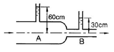
- VA = 2.7m/s , VB = 24.3m/s
- VA = 2.44m/s , VB = 2.44m/s
- VA = 0.54m/s , VB = 4.86m/s
- VA = 0.27m/s , VB = 2.44m/s
(정답률: 알수없음)
57. 원통 속의 액체가 중심축에 대하여 ⌒의 각속도로 강체와 같이 등속회전하고 있을때 가장 압력이 높은 지점은?
- 바닥면의 중심점 A
- 액체 표면의 중심점 B
- 바닥면의 가장자리 C
- 액체 표면의 가장자리 D
(정답률: 알수없음)
58. 바다에 비중이 0.88인 얼음이 떠 있는데 수면 위로 나와 있는 체적은 30 m3이다. 이 얼음의 전체중량은 몇 kN인가?(단, 바닷물의 비중은 1.025 이다)
- 2077.6
- 20776
- 1828.9
- 17444
(정답률: 알수없음)
59. 금속선에 전류가 흐를 때 일어나는 온도와 전기 저항과의 관계를 이용하여 유속을 측정하는 장치는?
- 열선풍속계
- 벤튜리미터
- 피토관
- 오리피스
(정답률: 알수없음)
60. 표준기압에서 온도 20℃인 공기가 평판 위를 20 m/s의 속도로 흐르고 있다. 선단으로 부터 5 ㎝ 떨어진 곳에서의 경계층의 두께는 ? (단, 공기의 동점성계수는 15.68x10-6 m2/s 이다)
- 0.99 ㎜
- 0.74 ㎜
- 0.13 ㎜
- 0.06 ㎜
(정답률: 알수없음)
4과목: 유체기계 및 유압기기
61. DOHC 엔진의 장점이 아닌 것은?
- 흡입효율의 향상
- 연소효율의 향상
- 응답성의 향상
- 동력전달효율의 향상
(정답률: 알수없음)
62. 로터리 기관의 특징으로 옳지 않은 것은?
- 마력당 중량이 가볍다.
- 높은 회전수를 얻을 수 있다.
- NOX의 생성이 적다.
- 회전력의 변동이 크다.
(정답률: 알수없음)
63. 행정체적 482cm3의 4행정 기관이 1,800rpm 으로 운전될 때 6ps을 발생한다. 제동평균 유효압력은 몇 kgf/cm2 인가?
- 5.8
- 6.2
- 6.8
- 7.2
(정답률: 알수없음)
64. 가솔린 기관에서 크랭크 축의 회전수와 점화 진각과의 관계는?
- 회전수의 증가와 더불어 점화진각은 커진다.
- 회전수의 증가와 더불어 점화진각은 작아진다.
- 회전수의 감소와 더불어 점화진각은 커진다.
- 회전수에 관계 없이 점화진각은 일정하다.
(정답률: 알수없음)
65. 어떤 4행정 4사이클 기관의 폭발순서가 1-2-4-3이다. 2번 실린더가 압축행정을 할 때 4번 실린더는 어떤 행정을 하는가?
- 흡입행정
- 압축행정
- 폭발행정
- 배기행정
(정답률: 알수없음)
66. 가솔린 기관에서 압축행정중 점화시기에 도달하기 전에 연소실내의 과열된 부분에 의하여 점화되는 현상은?
- 포스트 이그니션(post-ignition)
- 프리 이그니션(pre-ignition)
- 데토네이션(detonation)
- 노킹(knocking)
(정답률: 알수없음)
67. 가솔린 기관의 점화시기를 제어하기 위한 설명으로 잘못된것은?
- 혼합비와 충진율이 일정할 때 기관의 회전속도가 증가하면 점화시기를 진각시킨다.
- 배기가스의 온도를 상승시키기 위하여 점화시기를 진각시킨다.
- 잔류가스량이 많아지면 점화시기를 진각시킨다.
- 충진율이 적어지면 점화시기를 진각시킨다.
(정답률: 알수없음)
68. 내연기관의 노킹이 기관에 미치는 영향으로 가장 관련이 적은 것은?
- 열효율이 떨어진다.
- 기관 각부의 응력이 증가한다.
- 실린더가 과열된다.
- 출력이 증가한다.
(정답률: 알수없음)
69. 다음의 디젤 분사노즐에서 초기 분사량을 적게한 노즐은?
- 스로틀노즐
- 다공노즐
- 핀틀노즐
- 단공노즐
(정답률: 알수없음)
70. 가솔린 400cc를 완전 연소시키기 위해 필요한 공기의 무게는 이론상 몇 kgf 인가? ( 단 , 이론혼합비 (공기의무게/가솔린무게)=15, 가솔린 비중 = 0.73)
- 4.38
- 3.25
- 3.⑤
- 2.19
(정답률: 알수없음)
71. 유압 시스템의 주요 구성요소에 속하지 아니하고 부속기기로 분류되는 것은?
- 축압기
- 액추에이터
- 유압 펌프
- 제어 밸브
(정답률: 알수없음)
72. 일반적인 유압 기계의 운전 전 점검 사항이 아닌 것은?
- 기름의 온도
- 릴리프 밸브의 작동 상태
- 조정레버의 위치 상태
- 기름 탱크의 유량
(정답률: 알수없음)
73. 추의 낙하를 방지하기 위해서 배압을 유지시켜 주는 압력제어 밸브로 가장 적합한 것은?
- 릴리프 밸브
- 체크 밸브
- 시퀀스 밸브
- 카운터 밸런스 밸브
(정답률: 알수없음)
74. 유압 작동유에 혼입된 수분의 영향으로 볼 수 없는 것은?
- 작동유의 열화를 촉진한다.
- 작동유의 방청성을 저하시킨다.
- 작동유의 산화를 저하시킨다.
- 작동유의 윤활성을 저하시킨다.
(정답률: 알수없음)
75. 유압 실린더의 안지름이 20cm 이고 피스톤의 속도가 5m/min일 때 소요되는 유량은?
- 0.157 [ℓ/sec]
- 1.57 [ℓ/sec]
- 15.7 [ℓ/min]
- 157 [ℓ/min]
(정답률: 알수없음)
76. 유압 시스템은 비압축성 유체를 사용한다. 다음은 비압축성 유체를 사용하기 때문에 얻어지는 유압시스템의 가장 중요한 특성인 것은?
- 과부하 안전장치가 간단하다.
- 운동방향의 전환이 용이하다.
- 정확한 위치 및 속도 제어에 적당하다.
- 무단 변속이 가능하다.
(정답률: 알수없음)
77. 보기와 같은 유압회로의 명칭으로 가장 적합한 것은?
- 감속회로
- 감압회로
- 언로드 회로
- 로크 회로
(정답률: 알수없음)
78. 그림과 같이 펌프 출구단 직후에 릴리프밸브를 설치하여 그 최대 압력을 제한하는 회로의 명칭은?
- 감압 회로
- 압력 설정 회로
- 시퀜스 회로
- 카운터 밸런스 회로
(정답률: 알수없음)
79. 유압장치의 운동부분에 사용되는 실(seal)의 일반적인 명칭은?
- 패킹(packing)
- 가스킷(gasket)
- 심레스(seamless)
- 필터(filter)
(정답률: 알수없음)
80. 유압기기에 쓰여지는 베인펌프 특징 설명으로 틀린 것은?
- 작동유의 점도에 제한이 있다.
- 펌프 출력 크기에 비하여 형상치수가 작다.
- 비교적 고장이 많고 수리 및 관리가 복잡하다.
- 베인의 마모에 의한 압력저하가 발생되지 않는다.
(정답률: 알수없음)
5과목: 건설기계일반 및 플랜트배관
81. CNC 공작기계의 프로그램에서 G01이 뜻하는 것은?
- 위치결정
- 직선보간
- 원호보간
- 절대치 좌표지령
(정답률: 알수없음)
82. 프레스용 및 가정용 기구를 만드는 데 사용되는 양은(洋銀)은 은백색(銀白色)의 금속이다. 그 성분은?
- Aℓ의 합금
- Ni와 Ag의 합금
- Cu, Zn 및 Ni의 합금
- Zn과 Sn의 합금
(정답률: 알수없음)
83. 표면경화의 효과를 얻기 위한 방법들 중 잘못된 것은?
- 화염경화염
- 탈탄법
- 질화법
- 청화법(시안화법)
(정답률: 알수없음)
84. 공기 마이크로미터의 특징을 설명한 것 중 틀린 것은?
- 배율이 높다.
- 정도(精度)가 좋다.
- 압축 공기원(콤프레셔 등)은 필요 없다.
- 1개의 피측정물의 여러 곳을 1번에 측정한다.
(정답률: 알수없음)
85. 강판재에 곡선 윤곽의 구멍을 뚫어서 형판 (template)을 제작하려 할 때 가장 적합한 가공법은?
- 버니싱 가공
- 와이어 컷 방전가공
- 초음파 가공
- 플라즈마 젯 가공
(정답률: 알수없음)
86. 목형의 중량이 3[N], 비중이 0.6인 적송일 때, 주철 주물의 무게는 약 몇 [N]인가? (단 주철의 비중은 7.2이다)
- 27
- 32
- 36
- 40
(정답률: 알수없음)
87. 두께 1.5mm인 연질 탄소 강판에 직경3.2mm의 구멍을 펀칭할 때 전단력은 약 몇 kgf 인가?(단, 전단저항력τ= 25kgf/mm2 이다)
- 376.9
- 485.2
- 289.3
- 656.8
(정답률: 알수없음)
88. 테르밋용접(thermit welding)이란?
- 전기용접과 가스용접을 결합한 것이다.
- 원자수소의 반응열을 이용한 것이다.
- 산화철과 알루미늄의 반응열을 이용한 것이다.
- 액체산소를 이용한 가스용접의 일종이다.
(정답률: 알수없음)
89. 광파간섭 현상을 이용한 측정기는?
- 공구 현미경
- 오토콜리메이터
- 옵티컬 플랫
- 요한슨식 각도게이지
(정답률: 알수없음)
90. 선반에서 사용되는 부속품으로 잘못된 것은?
- 센터(center)
- 맨드릴(mandrel)
- 아버(arbor)
- 면판(face plate)
(정답률: 알수없음)
91. 불도저에서 1시간당 작업량을 K(m3/h), 사이클 시간을 C(min), 토량환산 계수를 f, 도저의 작업효율을 E라 할 때 블레이드 용량(1회의 흙 운반량) Q는 어떤 식으로 계산되는가?
(정답률: 알수없음)
92. 모우터그레이더의 구조에 관한 설명으로 옳은 것은?
- 플라이 휘일은 릴리스 레버를 밀어주는 일을 한다.
- 클러치 브레이크는 플라이 휘일 내치와 항시 치합되어 엔진 회전시 같이 회전한다.
- 릴리스 베어링은 원판형 마찰식으로 되어 있으며 클러치 패달을 밟으면 작동한다.
- 클러치 유압부스터는 클러치 분리작용을 해주는 구성품이다.
(정답률: 알수없음)
93. 쇄석기계의 제원을 든 것으로 틀린 것은?
- 죠 크러셔의 생산능력은 출구 간격의 크기와 비례한다.
- 파쇄된 골재를 크기별로 선별하는 장치가 있다.
- 벨트 속도는 단위 시간당 움직이는 벨트길이로 한다.
- 생산골재의 크기는 1회통과 때 보다 2회통과 때가 더 크다.
(정답률: 알수없음)
94. 콤프레서(compressor)의 규격을 표시하는 것은?
- kg
- m3
- m3/mm
- m3/min
(정답률: 알수없음)
95. 다이렉트 드라이브 변속기가 장착된 무한궤도식 불도저가 작업중에 과부하로 인하여 작업속도가 급격히 떨어졌으나 엔진회전 속도는 저하되지 않았다고 하면, 우선 점검할 개소는?
- 내연기관(engine)
- 메인 클러치(main clutch)
- 변속기(transmission)
- 최종 구동장치(final drive system)
(정답률: 알수없음)
96. 5 ton의 토량을 3 m/sec로 운반할 때 원동기의 출력은 몇 PS인가 ? (단, 마찰계수 μ=0.3 이다.)
- 10
- 20
- 40
- 60
(정답률: 알수없음)
97. 다음은 무한궤도식 불도저의 구조에 관한 설명이다. 이 중에서 옳은 것은?
- 주행속도를 변동시키는 것은 기관전기장치이다.
- 전동효율을 좋게 하기 위하여 토크컨버터를 장착한다.
- 기동륜(스프로켓트)은 뒷쪽 중량을 지지한다.
- 하부로울러(트랙 로울러)는 전체중량을 트랙 슈에 분포시키면서 전동한다.
(정답률: 알수없음)
98. 충격식 착암기 사용법에 따른 분류가 아닌 것은?
- 레그해머(leg hammer)
- 스토퍼(stopper)
- 웨건 드릴(wagon drill)
- 로드 밀(rod mill)
(정답률: 알수없음)
99. 휠로우더의 작업을 위한 속도조절은 무엇으로 하는가?
- 스로틀 레버(throttle lever)
- 변속 레버
- 주클러치 레버
- 브레에이크 페달
(정답률: 알수없음)
100. 지게차의 규격 표시 기준은?
- 자체중량
- 마스터의 높이
- 최대들어올림 중량
- 들어올림 높이
(정답률: 알수없음)